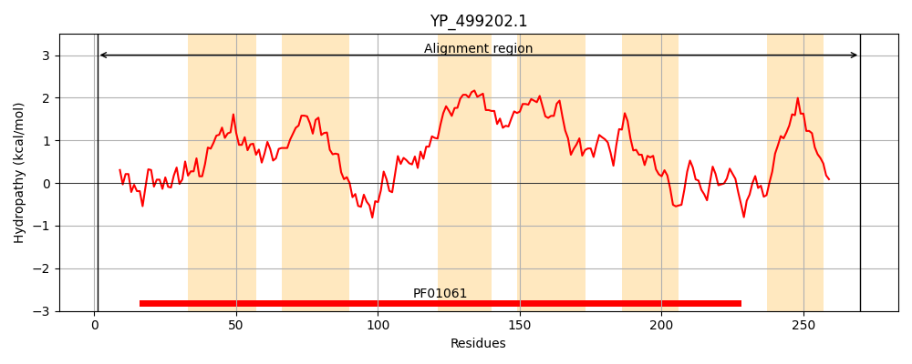
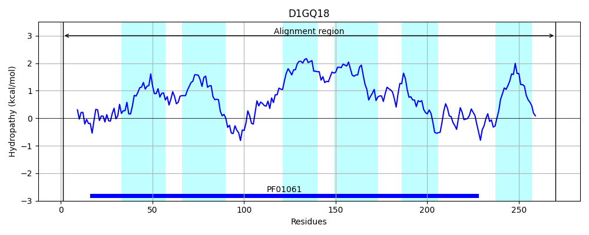
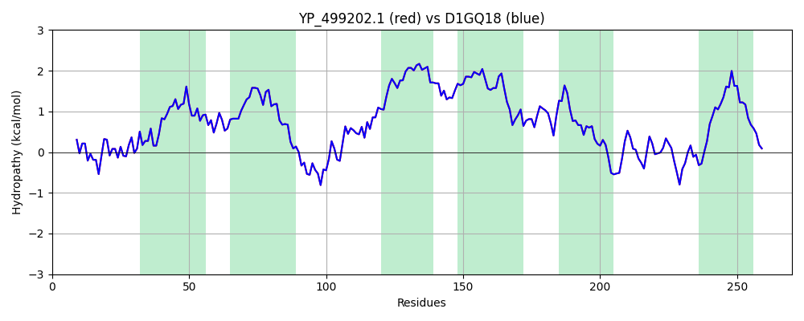

Hit Accession: D1GQ18
Hit TCID: 3.A.1.104.2
Hit Description: gnl|BL_ORD_ID|3012 gnl|TC-DB|D1GQ18|3.A.1.104.2 Teichoic acid ABC transporter permease protein OS=Staphylococcus aureus (strain TW20 / 0582) GN=tagG PE=4 SV=1
Mach Len: 270
e:0.000000
Query TMS Count : 6
Hit TMS Count: 6
TMS-Overlap Score: 6.850000
Predicted Substrates:CHEBI:9431;teichoic acid
BLAST Alignment:
Score: 1427 , Bit scores: 554 bits, E-value: 0.0e+00, Alignment length: 270, Percentage identity: 100
Query: 1 MSAIGTVFKEHVKNFYLIQRLAQFQVKIINHSNYLGVAWELINPVMQIMVYWMVFGLGIRSNAPIHGVPFVYWLLVGISMWFFINQGILEGTKAITQKFNQVSKMNFPLSIIPTYIVTSRFYGHLGLLLLVIIACMFTGIYPSIHIIQLLIYVPFCFFLTASVTLLTSTLGVLVRDTQMLMQAILRILFYFSPILWLPKNHGISGLIHEMMKYNPVYFIAESYRAAILYHEWYFMDHWKLMLYNFGIVAIFFAIGAYLHMKYRDQFADFL 270
MSAIGTVFKEHVKNFYLIQRLAQFQVKIINHSNYLGVAWELINPVMQIMVYWMVFGLGIRSNAPIHGVPFVYWLLVGISMWFFINQGILEGTKAITQKFNQVSKMNFPLSIIPTYIVTSRFYGHLGLLLLVIIACMFTGIYPSIHIIQLLIYVPFCFFLTASVTLLTSTLGVLVRDTQMLMQAILRILFYFSPILWLPKNHGISGLIHEMMKYNPVYFIAESYRAAILYHEWYFMDHWKLMLYNFGIVAIFFAIGAYLHMKYRDQFADFL
Sbjct: 1 MSAIGTVFKEHVKNFYLIQRLAQFQVKIINHSNYLGVAWELINPVMQIMVYWMVFGLGIRSNAPIHGVPFVYWLLVGISMWFFINQGILEGTKAITQKFNQVSKMNFPLSIIPTYIVTSRFYGHLGLLLLVIIACMFTGIYPSIHIIQLLIYVPFCFFLTASVTLLTSTLGVLVRDTQMLMQAILRILFYFSPILWLPKNHGISGLIHEMMKYNPVYFIAESYRAAILYHEWYFMDHWKLMLYNFGIVAIFFAIGAYLHMKYRDQFADFL 270 | Protein Hydropathy Plots: |
|---|
|  |  |
Pairwise Alignment-Hydropathy Plot:
|
|---|
|  |